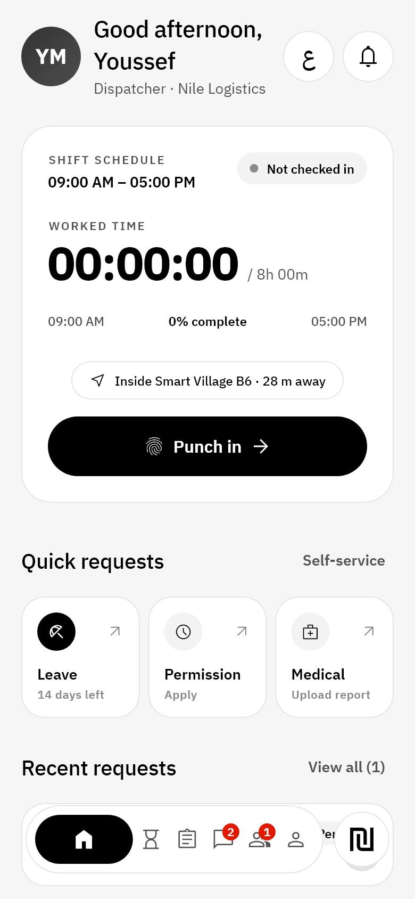
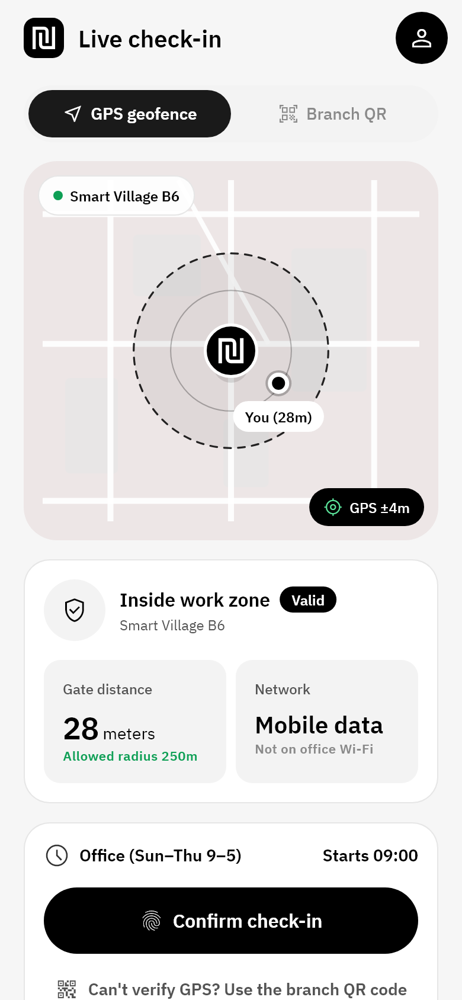
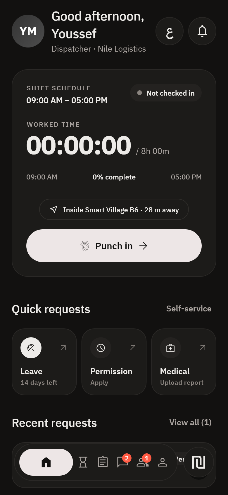
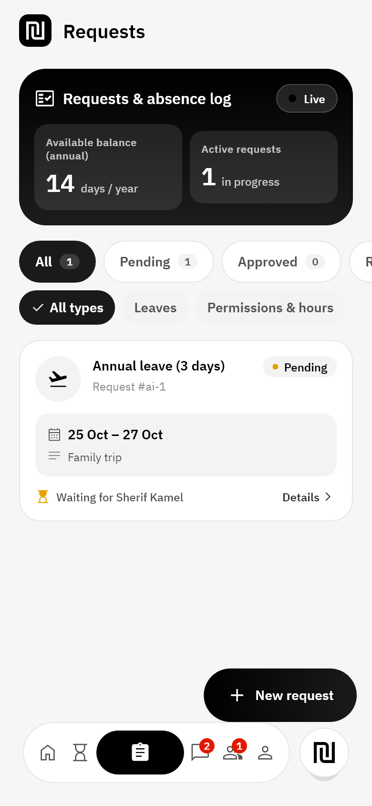
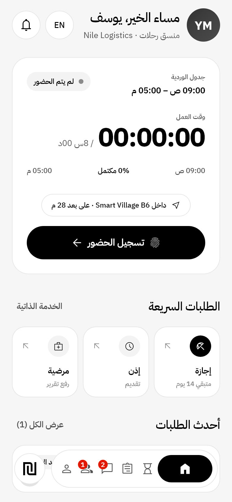

نطاق الفرع بالـ GPS
التطبيق بيتأكد إن الموظف جوه نطاق الفرع (مثلاً 120 متر) ودقة الموقع كويسة، وبيرفض الموقع المزيّف.
نظام بيخلي الموظف يسجّل حضوره بموقعه وبصمته من موبايله، ويقدّم إجازته وإذنه في ثواني، وبيخلي المدير والـ HR يشوفوا كل حاجة لحظة بلحظة. بالعربي وبالإنجليزي.




مفيش جهاز بصمة على الحيطة ولا طوابير الصبح. الموبايل هو الجهاز.
التطبيق بيتأكد إن الموظف جوه نطاق الفرع (مثلاً 120 متر) ودقة الموقع كويسة، وبيرفض الموقع المزيّف.
لو الـ GPS ضعيف، الموظف يمسح كود الفرع. الكود لازم يبدأ بـ nizam-checkin: عشان محدش يزوّره.
كل تسجيل بيتوقّع بمفتاح محفوظ في موبايل الموظف نفسه، فمينفعش زميل يسجّل مكان زميله.
النت فاصل؟ التسجيل بيتحفظ بالوقت المظبوط ويتبعت أول ما الاتصال يرجع.
أبيض وأسود بسيط على طريقة التطبيقات الكبيرة، ووضع داكن هادي مريح للعين.
الموظف بيطلب، المدير بيوافق من موبايله، والـ HR بيتابع من مكان واحد.
سنوي، عارضة، مرضي بتقرير، إذن بالساعة، وشغل من البيت. الرصيد قدامه دايماً.
يوافق أو يرفض بلمسة، ويفوّض حد مكانه وهو في إجازة.
كشف الراتب كل شهر، طلب سلفة بأقساط، وتقدير مكافأة نهاية الخدمة.
يصوّر الفاتورة ويطلب استرداد، والمبلغ بينزل مع المرتب.
خطاب مرتب أو خبرة أو للسفارة، والمستندات محفوظة، وتوقيع إلكتروني بشهادة.
مين حضر النهارده، مين متأخر، تقويم الإجازات، وتقارير الالتزام.
الموظف يبدّل ورديته مع زميل، والمدير يوافق.
تقييم ذاتي، أهداف، دورات تدريبية، واستبيانات مجهولة.
شات بين الموظفين والـ HR، وإعلانات الشركة توصل لكل الناس.

نضيف الفروع ونطاق كل فرع، والورديات وأيام الإجازة، وأنواع الطلبات.
كل موظف يدخل بإيميل الشغل ويسجّل بصمته على موبايله مرة واحدة.
الحضور والطلبات والموافقات بتوصل للمدير والـ HR وقتها، من غير Excel آخر الشهر.
كلمنا ونجهّزلك نسخة لشركتك، ونوريك التطبيق في 15 دقيقة.